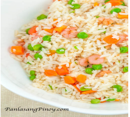
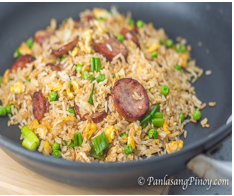
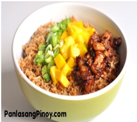
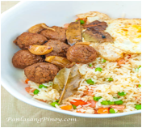

Shrimp Fried Rice Recipe
Ingredients:
- 4 cups cooked white rice
- ¾ cup frozen green peas
- ¾ cup frozen small shrimp with no shell
- ½ cup carrot diced
- 1/2 teaspoon garlic powder
- ¼ teaspoon salt
- ¼ teaspoon onion powder
- 3 tablespoons butter
Instructions:
- Combine the rice, salt, garlic powder, and onion powder Gently mix to blend all the ingredients.
- Melt the butter in a pan.
- Once the butter starts to get hot (make sure not to get the butter very hot), put-in green peas and carrots. Cook for 1 to 2 minutes.
- Put the shrimp in the wok and cook for 1 minute.
- Add the rice mixture. Cook for 10 minutes in medium heat while tossing once in a while. Make sure to toss the ingredients while cooking to blend them properly.
- Transfer to a serving bowl. Serve for breakfast or lunch with your favorite dish.
- Share and enjoy!

Kielbasa Fried Rice
Ingredients:
- 4 cups cooked white rice preferably leftovers
- 3 tablespoons butter
- 1 teaspoon garlic powder
- 2 eggs
- 1 cup sliced Kielbasa sausage
- 1/2 cup green peas
- 1/4 cup chopped green onions
- 3 tablespoons soy sauce
Instructions:
- Melt butter in a pan.
- Add the Kielbasa sausage. Cook in low to medium heat for 1 minute per side.
- Push the Kielbasa on the side. Crack the eggs and stir. Continue to cook until the eggs are formed.
- Put the rice in the pan. Gently fold until all the ingredients are well blended.
- Add the green peas, garlic powder and soy sauce. Stir fry until blended.
- Put the chopped green onions on top. Stir fry for 2 to 3 minutes.
- Serve. Share and enjoy!

Bagoong Rice Recipe
Ingredients:
- 1/4 lb. pork belly sliced thin
- 3 tablespoons chopped scallions
- 1/2 cup green mango chopped
- 5 cups steamed white rice
- 3 tablespoons bagoong guisado or bottled shrimp paste
- 1 teaspoon garlic minced
- 1 tablespoon cooking oil
Instructions:
- Heat a frying pan.
- Sear the sliced pork belly by putting them directly in the hot pan and cooking them until oil comes out. This should take about 2 to 5 minutes.
- Add 1 tablespoon of bagoong guisado and then stir. Cook for a minute and then remove from the pan and set aside.
- Pour the oil in the same frying pan.
- When the oil becomes hot, put-in the garlic and then cook for 15 seconds.
- Add 2 tablespoons of shrimp paste and then cook for 30 seconds in medium heat.
- Put-in the rice. Gently mix while cooking until all the ingredients are distributed properly. Cook the rice for 10 minutes while gently scraping the bottom of the pan once in a while.
- Transfer the rice to a serving bowl. Top with the cooked pork belly, chopped green mango, and chopped scallions.
- Serve. Share and enjoy!
Arroz Valenciana
Ingredients:
- 1/2 lb. chicken thigh or breast chopped
- 3 pieces chorizo de bilbao sliced diagonally
- 1/2 cup malagkit glutinous white rice
- 1 cup Jasmine rice
- 2 tablespoons tomato paste
- 1 medium red bell pepper cut into strips
- 1/2 cup raisins
- 1/2 cup frozen green peas
- 1 teaspoon paprika
- 2 cups chicken broth
- 1 cup coconut milk
- 1 medium tomato diced
- 1 medium yellow onion diced
- 3 cloves of garlic crushed
- 3 boiled eggs
- 3 tablespoons extra virgin olive oil
- a pinch of Spanish saffron
- Salt and pepper to taste
Instructions:
- Combine the glutinous rice and jasmine rice. Wash with water twice and then drain. Set aside.
- Heat the olive oil in a paellera or wide pan.
- Saute the garlic, onion, and tomato until the onion and tomato becomes soft.
- Put-in the chopped chicken. Cook for 3 minutes.
- Add the chorizo de bilbao. Cook for 2 minutes.
- Add-in the salt, pepper, saffron, and paprika. Stir.
- Pour-in the chicken broth and coconut milk. Stir and let boil.
- Add-in the washed rice. Stir. Let boil.
- Add the tomato paste. Stir. Cover and simmer for 5 minutes.
- Put-in the raisins, and green peas. Cover and simmer for 8 minutes.
- Add-in the red bell pepper. Continue to simmer until the rice is fully cooked.
- Garnish with sliced boiled egg. Serve.
- Share and enjoy!

Shrimp with Butter and Taba ng Talangka Recipe
Ingredients:
- 12 pieces medium sized shrimps, shelled and gutted
- 1/2 cup broccoli, choppe
- 1/2 cup cauliflower, choppe
- 1 small carrots, slice
- 5 cups cooked Jasmine rice, preferably a day ol
- 2 teaspoons soy sauc
- 1/2 teaspoon garlic powde
- 1/2 teaspoon onion powde
- 1/2 teaspoon salt
- 3 tablespoons butter
Instructions:
- Combine the broccoli, cauliflower, and carrots in a small bowl. Heat the vegetables in a microwave oven for 4 minutes. Set aside.
- Combine rice, garlic powder, onion powder, and salt. Mix well.
- Melt butter in a wide pan.
- Put-in shrimps and cook for a minute per side. Remove the shrimps and then set aside.
- Using the same pan with the remaining butter, add-in the rice. Gently stir every 30 seconds for the next 5 to 7 minutes.
- Pour-in soy sauce. Stir until well distributed.
- Put-in shrimps and vegetables. Stir. Cook for 3 minutes more.
- Transfer to a serving plate. Serve. Share and enjoy!

Meatball Adobo with Shrimp Fried Rice and Egg
Ingredients:
- 1 serving of Meatball adobo
- 1 1/2 serving of Shrimp Fried Rice
- 4 to 6 pieces eggs
- Prepare the adobo meatball and shrimp fried rice according to the recipe provided in the links above.
- In 4 to 6 individual plates, arrange a portion of the fried rice and adobo meatballs. Top with fried egg. your fried egg does not need to be perfect, unless you really insist.
- Serve for either breakfast, lunch or dinner. This can also be a good "baon" for school or for the office.
- Share and enjoy!